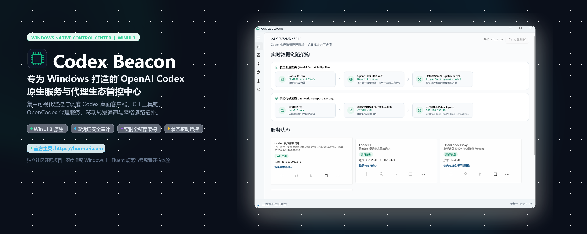

统一纳管 Windows 上的 Codex 桌面客户端、CLI、OpenCodex 模型分发代理、Codex Relay 移动端中继与 Tailscale 网状拓扑。告别繁杂的控制台命令，在 Windows 11 Fluent 原生面板中纵览全局。

AI 研发工具链的扩展让开发者需要在桌面客户端、CLI、代理服务和 VPN 隧道间反复横跳。Codex Beacon 让一切生命周期在单一窗口内透明受控。
基于 Windows App SDK 与 C# 构建，坚持明亮主题与 Windows 11 设计语言规范。无 Chromium/Electron 内存膨胀，冷启动毫秒级响应，与 Windows 系统体验严丝合缝。
坚持最严格的安全隐私底线：系统仅通过进程树、端口监听与 TCP 状态判断服务健康，绝不读取、存储或上传任何 API Token、登录凭据或会话载荷。
行业首创将“模型分发管线”与“底层网络代理路径”解耦观测。一眼看清当前请求是直连官方、走 OpenCodex 智能分流，还是被系统代理转发。
安装、登录、启动、停止、重启或升级均受服务状态前置约束。支持 Node.js/NVM 运行时切换、npm 模块依赖校验，管理员特权操作标注 🛡️ 盾牌提示。
直观展现 ChatGPT 真实外网出口 IP，配合国家国旗 Emoji、城市、运营商/AS 归属，并智能标注家庭宽带 (Residential) 或机房节点 (IDC)，告别被拒风险。
内置完整 English 与 简体中文 双语系统。不仅默认智能跟随 Windows 显示语言，更支持在设置中免重启即时热切换所有诊断文本与控制面板。
AI 客户端与代理的故障 80% 出在路径错位上。Codex Beacon 将逻辑模型转发与底层物理通信分离开来，让问题无处遁形。
完全遵循微软 Fluent Design System 规范，卡片化布局、清爽排版与直观的状态色谱。
核心官方工具链与社区可选扩展严格隔离，互不干扰，组件状态一目了然。
| 组件名称 | 角色定位 | 包体 / 宿主类型 | 支持的管理动作 | 依赖关系 |
|---|---|---|---|---|
| OpenAI Codex Desktop | Codex 官方桌面客户端 (ChatGPT.exe) | MSIX / Appx 本地安装 | 检测、启动、杀死守护进程、查看版本与账号 | 产品核心 |
| Codex CLI | OpenAI 官方命令行编码助手 | npm: @openai/codex |
安装、升级到最新版、启动、更新检查 | Node.js ≥ 22.14.0 |
| OpenCodex Proxy | 多模型提供商智能分流代理网关 | npm: @bitkyc08/opencodex |
安装、升级、启动 10100 服务、重启、安全停止 | 可选扩展 |
| Codex Relay | 移动端与远程设备配对中继隧道 | npm: codex-relay |
安装、升级、启动中继服务、登录与配对认证 | 可选扩展 |
| NVM & Node.js | 本地 Node 运行时版本管理环境 | Windows 命令行工具 | 已安装版本列表、一键切换当前版本、安装指定 LTS | 系统环境 |
| Tailscale | 跨设备安全网状虚拟私网 (Mesh VPN) | Windows 网络服务 | 读取在线节点列表、多虚拟 IP 展示、网络健康监测 | 网络支撑 |
所有构建均已通过 Windows 10/11 本地测试，提供便携免安装版与精简依赖版两种选择。
开箱即用。已完整内嵌 .NET 10 运行时及 Windows App SDK，解压即可直接运行。
极小体积包。适合已有 .NET 10 与 Windows App SDK 基础运行库的开发者。
e5b0ecffdf55850450534241e06573c004a2ea2e39ea7fe9f9f8fba3d5267be4 *CodexBeacon-0.3.0-portable-win-x64.zip
e4e3b7b252cefb67c6da99859fbb34e9e4f52988185c6dfbf4ae3b8110b93867 *CodexBeacon-0.3.0-runtime-dependent-win-x64.zip关于系统要求、安全性、权限与运行机制的解答。
config.toml 或修改原本指向官方的 model_provider。